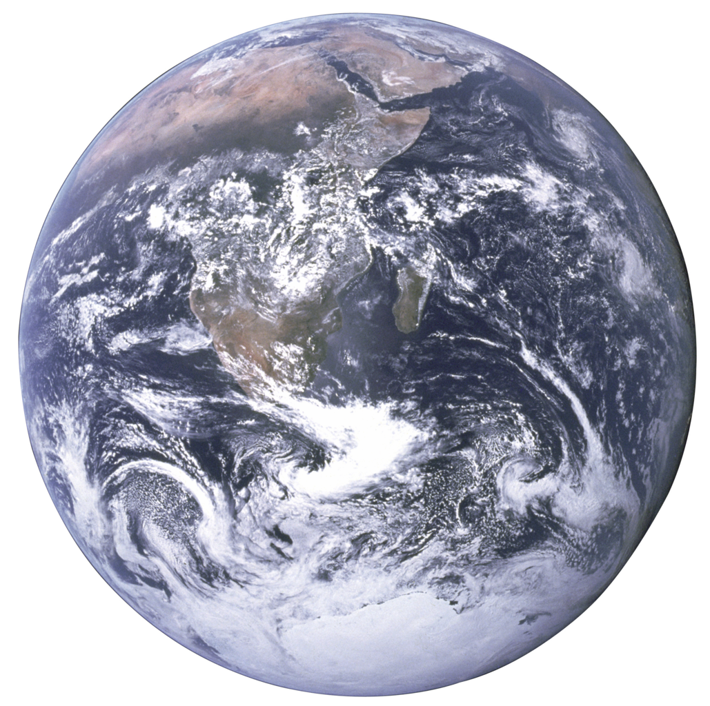

ICPC World Finals 2020 · Problem O

It’s the year 2521, and interstellar probes have reached planets in distant solar systems. The Interstellar Consortium of Planet Cartographers (ICPC) has created detailed maps of these planets, and they seem to indicate the existence of alien life! On each map, the ICPC has recorded the locations of what appear to be alien dwellings.
The ICPC was planning to release this exciting news to the public, but at the last moment, disaster struck. One of the ICPC’s interns deleted all meta-data associated with the maps. So while the maps themselves are safe, the ICPC does not know which maps belong to which planets. For this, they have come back in time to ask for your help. Given two maps, can you determine whether they describe the same planet? Hopefully, a 500-year head start will be enough time to solve this important problem!
The planetary maps consist of sets of points on the (spherical) planet surface. They are specified in terms of latitude (the angle north or south of the equator) and longitude (the angle west or east of the noon meridian, which is the location of the sun when the map’s data was collected). Two maps for the same planet always agree on the latitudes of the points, since the planet’s axis does not change. However, the longitudes of the points might differ, because the planet rotates between measurements.
The first line of input contains an integer n (1 ≤ n ≤ 400 000), the number of points in each of the two maps to be compared. Then follow n lines describing the first map. Each of these lines contains two real numbers a and b, where a (−90 < a < 90) is the latitude and b (−180 < b ≤ 180) is the longitude. Coordinates are expressed in degrees and have at most four digits after the decimal point. No two points on the map will have the same coordinates. The remaining n lines describe the second map in the same format as the first.
Output Same if there is a rotation around the planet’s axis that transforms one map into the other. Otherwise, output Different.
4 0.0000 0.0000 30.0000 90.0000 -45.0000 -30.0000 30.0000 60.0000 30.0000 150.0000 30.0000 120.0000 0.0000 60.0000 -45.0000 30.0000
Same
3 0.0000 0.0000 30.0000 0.0000 30.0000 90.0000 0.0000 0.0000 30.0000 0.0000 30.0000 -90.0000
Different